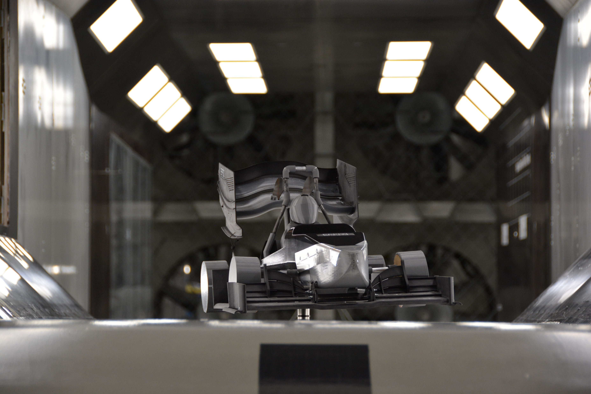
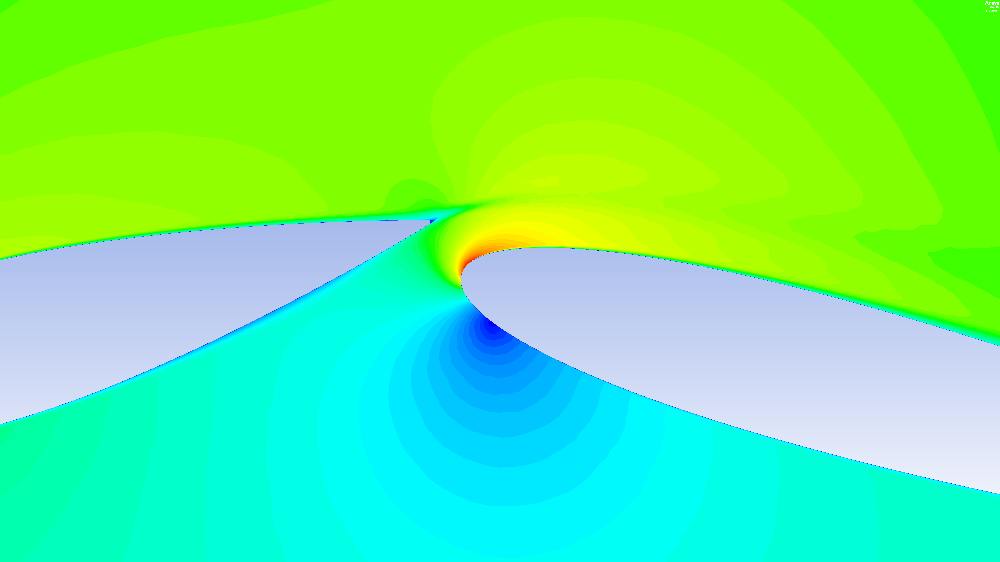

Mechanical Engineer · Fluid Mechanics
Thomas Lepère
I combine CFD, wind-tunnel testing and data analysis to understand complex flows and validate engineering models.



Selected work
Engineering projects
Concise evidence of the problem, method, result and personal contribution.

M.Sc. in Mechanical Engineering with a Fluid Mechanics specialisation. My projects span aerodynamic correlation, multiphase CFD, experimental pressure measurements, machine-learning forecasting and finite-element analysis.
I focus on traceable methods: mesh convergence, uncertainty awareness, model limitations and clear quantitative results.
Contact
Open to engineering opportunities
CFD · Aerodynamics · Experimental testing · Data analysis
thomaslepere33@gmail.com